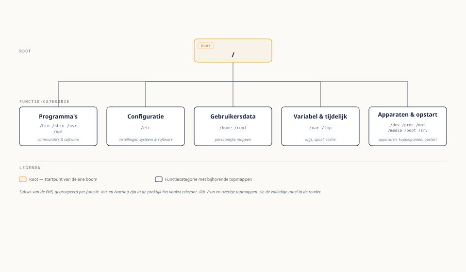

Eén boom, geen schijfletters
⏱ 8 minMilan is gewend aan Windows Verkenner: C:\ voor de systeemschijf, misschien D:\ voor data, E:\ voor een USB-stick. Op zijn eerste Ubuntu-VM zoekt hij tevergeefs naar zoiets. Fenna legt uit: Linux kent geen schijfletters. Er is precies één boomstructuur, beginnend bij de root (/), en elke schijf, partitie, USB-stick of netwerkshare wordt ergens in die ene boom gekoppeld (gemount) als een map.

/)Dat een USB-stick niet vanzelf verschijnt als een nieuwe "letter" maar ergens in de bestaande boom opduikt (typisch onder /media/milan/... bij automatisch koppelen), is voor nieuwe Linux-gebruikers vaak het meest verwarrende punt. Zodra u het eenmaal als "alles is één boom" ziet, verdwijnt die verwarring.
Uit Werkboek deel 9, Opdracht 9.5 — Fenna's puzzel: de verdwenen USB-stick
1Milan sluit een USB-stick aan op de Raspberry Pi en verwacht een nieuwe schijfletter. Er verschijnt niets vanzelf. Waarom niet, en met welke twee commando's kan hij toch controleren of de stick is herkend?Toon antwoord
/. Nieuwe opslag krijgt geen eigen "letter" maar wordt ergens in die bestaande boom gekoppeld (gemount) — totdat dat koppelen gebeurt, is de inhoud niet zichtbaar via een gewoon pad, ook al herkent het systeem de hardware zelf mogelijk al wel. Twee bruikbare commando's: lsblk (toont of het apparaat fysiek herkend is, ook als het nog niet gekoppeld is — een partitie zonder waarde in de kolom MOUNTPOINT) en dmesg | tail (toont recente kernelmeldingen, waaronder doorgaans een regel die aangeeft dat een nieuw USB-opslagapparaat is gedetecteerd).